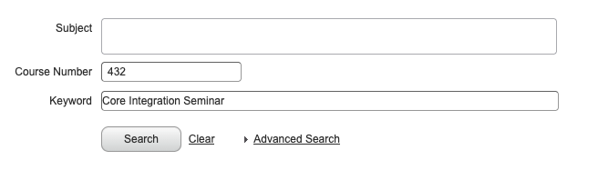

Offered by various departments, copy image below on Zagweb to find them
The Core Integration Seminar (CIS) offers students a culminating core experience in which they integrate the principles of Jesuit education, prior components of the core, and their disciplinary expertise. Some CIS courses may also count toward a student’s major or minor.